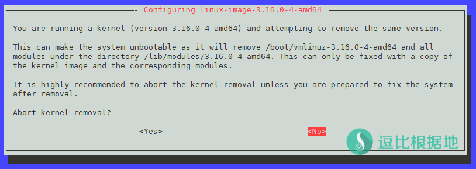

这几天很火的BBR，我研究了一下，写了一个一键脚本，适合新手使用。
手动安装方法：比锐速还强的 TCP拥塞控制技术 —— TCP-BBR 测试及开启教程
注意：TCP-BBR和锐速一样，不支持Openvz，查看本教程之前，请先确定你的VPS的虚拟化技术！
注意：本教程涉及到VPS更换内核，所以如果步骤错误，或者VPS不兼容最新的内核，会导致无法开机等错误，请勿用于生产环境！！！！
BBR 简单介绍
BBR 是一个由谷歌社区开发的 TCP拥塞控制技术，目前处于开发初期，但是前景很棒，大家可以持续关注，同时BBR是集成与Linux最新版本的内核中的。
具体什么是TCP拥塞控制技术，详细的我也不懂，我就用通俗一点的话解释一下，不一定准确，看一看理解一下就好了。
原始的TCP流量传输，已经不能适应现在的互联网了，我们把 TCP流量比喻成 公路上的汽车流量，而TCP传输隧道就是 公路，那么：
在原始的TCP流量传输中，一条十字路口公路，很多车流量，但是却没有红绿灯和交警，导致大家左挤右挤的堵车了，这就是没有合理的管理导致的。
而BBR和锐速等TCP流量控制技术，就是红绿灯+交警，他们就是在无人管理的十字路口，去合理指挥分配车流量，然后最大化的利用车流量，保证路面畅通。
大概就是这样解释了，有什么错误请指出。
BBR官方项目地址：https://github.com/google/bbr
系统要求
Debian / Ubuntu 14.04 +
CentOS用户请使用这个脚本：CentOS/Debian/Ubuntu系统 TCP-BBR 一键安装脚本
本脚本只在 Debian 7 / Debian 8 / Ubuntu 14.04 / Ubuntu 16.04 (均 x64位) 这几个系统中测试过脚本可以正常运行(Vultr)！
强烈推荐 Debian 8 x64，这个是我一直使用的系统，我的脚本在这个系统上面出错率最低。
至于为什么不支持 CentOS 等系统，主要是我不怎么用其他的系统，就不做支持了。
脚本版本
Ver: 1.0.22
安装步骤
更换内核需要ROOT权限，所以如果你是普通用户 的话，需要ROOT账号权限，如果你是ROOT账号，那就忽略这个步骤：
sudo su
输入并回车后，会提示让你输入当前账号的密码，输入并回车后就可以继续下面的步骤了。
wget -N --no-check-certificate https://raw.githubusercontent.com/ToyoDAdoubiBackup/doubi/master/bbr.sh && chmod +x bbr.sh && bash bbr.sh
下载并运行脚本后，会自动检测并开始安装，首先会提示你输入要下载的内核版本，可以安装自定义版本的内核，也可以直接回车安装最新版本的内核（内核版本获取）！
请输入 要下载安装的Linux内核版本(BBR) [ 格式: x.xx.xx ，例如: 4.9.96 ] [注意] 内核版本列表请去这里获取：[ http://kernel.ubuntu.com/~kernel-ppa/mainline/ ] 建议使用稳定版本：4.9.XX ，4.9 以上版本属于测试版，稳定版与测试版同步更新，BBR 加速效果无区别。 (直接回车，自动获取最新稳定版本):
注意：在Debian系统中，删除旧内核时，会提示你是否终止删除内核的行为（如下图），这个需要你选择 <No> (键盘方向键 选择，回车键 确认)。

如果没有出错，内核更换完毕后，会提示是否立即重启VPS，直接回车或者输入 Y 。
需要重启VPS后，才能开启BBR，是否现在重启 ? [Y/n] : y [注意] 重启VPS后，请运行脚本查看 BBR 是否正常加载，运行命令： bash /xxx/bbr.sh status [信息] VPS 重启中...
等待十几秒，VPS启动后，重新通过SSH连接VPS，运行重启时提示的命令查看BBR是否加载成功。
bash /xxx/bbr.sh status # /xxx/ 是BBR脚本所在目录，脚本会自动识别并显示给你，免得一些人找不到自己把 bbr.sh 脚本下载到哪里去了。
然后就会自动开启BBR。
如果重启VPS后，无法连接（或者链接后查看状态提示：BBR已开启但未启动），说明内核安装或与系统存在兼容性问题，无法正常启动，代表你的VPS当前系统无法使用BBR，请更换其他系统！
使用方法
# 启动BBR bash bbr.sh start # 关闭BBR bash bbr.sh stop # 查看BBR状态 bash bbr.sh status
注意：关闭BBR，需要重启VPS，所以脚本会提醒是否立即重启VPS。
升级BBR
bash bbr.sh # 重新执行脚本会检测最新内核和当前内核，对比版本
因为 BBR 只是内核中的一个模块，所以内核更新不一定是 BBR 更新，就像 Win10 中 IE 的位置一样，Win10 更新不代表是为了更新 IE ，所以是否要更新内核要看 BBR 官方源码有没有更新了。
BBR官方项目地址：https://github.com/google/bbr
另外，4.9.xx 版本为稳定版内核，4.9 以后的版本都是测试版内核，稳定版和测试版同步更新，BBR 模块也是同步更新，建议使用稳定版内核。
卸载BBR
BBR集成于内核中，所以卸载BBR=更换内核，教程：
Debian/Ubuntu 内核降级教程 —— 降低(BBR)为支持锐速的内核版本
其他说明
注意：TCP-BBR必须是 2016-12-05 21:00 更新的 4.9.0-rc8 内核及以后的版本 才能开启，而锐速并不支持这个最新的内核版本，所以TCP-BBR和锐速是不可能共存的。
裸SS / 锐速+SS / BBR+SS简单速度对比，仅供参考，看这里。
更换内核后重启服务器无法启动 的问题
如果重启VPS后，无法连接，说明内核安装有问题 或 内核与系统存在兼容性问题，无法正常启动。
这代表你的VPS当前系统不支持最新的内核版本，无法开启BBR，请更换其他系统尝试！
提示 wget: unknown host “raw.githubusercontent.com” 之类的错误
这是无法解析我的域名，多半是DNS的问题，请更换DNS为谷歌DNS。
echo "nameserver 8.8.8.8" > /etc/resolv.conf echo "nameserver 8.8.4.4" >> /etc/resolv.conf
提示 wget: command not found 的错误
这是你的系统精简的太干净了，wget都没有安装，所以需要安装wget。
# Debian/Ubuntu 系统: apt-get install -y wget
更新日志
2018年02月04日，版本 v1.0.21
1. 修复 v4.15.0 内核版本后，脚本检测BBR状态错误问题。
2017年12月02日，版本 v1.0.20
1. 优化 卸载内核时，如多余内核等于0(除了刚安装的内核以外的)，那么将直接跳过卸载多余内核步骤（以前是提示内核数量错误中断脚本）。
2017年11月13日，版本 v1.0.19
1. 修复 更换内核，卸载旧内核步骤时误删新内核的问题。
2017年11月13日，版本 v1.0.18
1. 修复 更换内核，卸载旧内核步骤时，判断内核数量有误的问题（更新脚本后，只需要重新执行 bash bbr.sh install 即可继续删除旧内核步骤）。
2017年09月06日，版本 v1.0.17
1.修复 在内核版本为 X.XX.0 的时候，检测BBR更新会提示更新的问题（很早就有的BUG，一直忘记修复，这是因为内核仓库版本号为 4.13 而安装后内核版本为 4.13.0 导致不一致，所以才会不停循环提示更新）。
如果有什么BUG，请联系我或者在下面评论留言！
允许转载，但是请注明源链接，谢谢！
转载请超链接注明：逗比根据地 » 『原创』Debian/Ubuntu TCP拥塞控制技术 ——TCP-BBR 一键安装脚本
责任声明：本站一切资源仅用作交流学习，请勿用作商业或违法行为！如造成任何后果，本站概不负责！


如果你用某个版本号稳定，那么建议以后都用该版本号，反正BBR是都一样的。
请重装系统解决，重装系统后如果还要安装，那么尝试更换系统或者内核版本号。
你现在是因为重启服务器的原因，SSH客户端的链接已经断开了，你需要等待重启完毕然后再次链接SSH，再去执行代码。